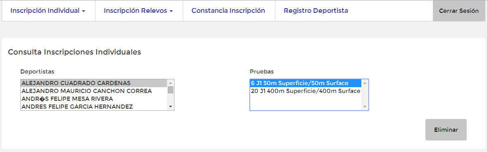

Manual de usuario para Inscripciones
Indice
Pruebas Individuales
En la seccion de pruebas individuales usted podrá realizar la inscripcion de sus deportistas a las pruebas indivduales del torneo actual.
Tambien podra consultar las pruebas a las que esta inscrito un deportista y eliminar las inscripciones que desee.
Registro de pruebas
En esta seccion, usted encontrará la lista de sus deportistas. Si no encuentra uno de sus deportistas, lo puede registrar (Ver seccion Registro deportista).
Al hacer clic en un deportista de la lista, a la derecha se desplegará una lista con las pruebas a las que el deportista seleccionado puede inscribirse.
La notacion que se utiliza en la lista de pruebas es la siguiente: [orden de la prueba] [Jornada de la prueba] [Nombre de la prueba] [Categoria de la prueba]
De la lista de pruebas, usted podrá seleccionar una o mas pruebas a las que desea inscribir al deportista seleccionado.
Para seleccionar varias pruebas, usted debe mantener presionada la tecla Ctrl de su teclado, y posteriormente hacer clic en las pruebas que desea
Una vez seleccionadas las pruebas a las que desea inscribir al deportista seleccionado, haga clic en el boton Registrar
El sistema le mostrará un mensaje de confirmaciún por cada prueba seleccionada en el mismo orden en el que estan la pruebas en la lista.
Si ya habia hecho la inscripción a la prueba, el sistema no hará la inscripcion y mostrará un mensaje informando que no se realizó la inscripciún.
Esto no impedirá la inscripción del resto de pruebas seleccionadas

Consulta de pruebas inscritas
En esta seccion, usted podra consultar las pruebas a las que estan inscritos sus deportistas.
Para ir a esta sección, usted debe dar clic la opciún Inscripcion Individual del menu, la cual le desplegará un sub menu, posteriormente de clic en Consultar Inscripción

En esta seccion, inicialmente usted encontrará la lista de sus deportistas.

Al hacer clic en un deportista de la lista, a la derecha se desplegará una lista con las pruebas a las que el deportista seleccionado esta inscrito.

De la lista de pruebas, usted podrá seleccionar una o mas pruebas de las que desea desinscribir al deportista inscrito
Para seleccionar varias pruebas, usted debe mantener presionada la tecla Ctrl de su teclado, y posteriormente hacer clic en las pruebas que desea
Una vez seleccionadas las pruebas a las que desea desinscribir al deportista seleccionado, haga clic en el boton Eliminar
El sistema le mostrará un mensaje de confirmación por cada prueba seleccionada en el mismo orden en el que estan la pruebas en la lista.
Pruebas de Relevo
En la seccion de pruebas de relevo, usted podrá realizar la inscripcion de su club a las pruebas de relevo del torneo actual.
Tambien podra consultar las pruebas a las que esta inscrito su club y eliminar las inscripciones que desee.
Registro de pruebas
En esta seccion, usted encontrara una lista con las pruebas de relevo a las que su club puede inscribirse.
La notacion que se utiliza en la lista de pruebas es la siguiente: [orden de la prueba] [Jornada de la prueba] [Nombre de la prueba] [Genero] [Categoria de la prueba]

De la lista de pruebas, usted podrá seleccionar una o mas pruebas a las que desea inscribir su club.
Para seleccionar varias pruebas, usted debe mantener presionada la tecla Ctrl de su teclado, y posteriormente hacer clic en las pruebas que desea

Una vez seleccionadas las pruebas a las que desea inscribir su club, haga clic en el boton Registrar
El sistema le mostrará un mensaje de confirmación por cada prueba seleccionada en el mismo orden en el que estan la pruebas en la lista.

Si ya habia hecho la inscripción a la prueba, el sistema no hará la inscripcion y mostrará un mensaje informando que no se realizó la inscripciún.
Esto no impedirá la inscripción del resto de pruebas seleccionadas.
Consulta de pruebas inscritas
En esta seccion, usted podra consultar las pruebas de relevo a las que esta inscrito su club.
Para ir a esta sección, usted debe dar clic la opción Inscripción Relevos del menu, la cual le desplegará un sub menu, posteriormente de clic en Consultar Inscripción
En esta seccion, inicialmente usted encontrará una lista con las pruebas de relevo a las que su club esta inscrito.

De la lista de pruebas, usted podrá una o mas pruebas de las que desea desinscribir a su club.
Para seleccionar varias pruebas, usted debe mantener presionada la tecla Ctrl de su teclado, y posteriormente hacer clic en las pruebas que desea.
Una vez seleccionadas las pruebas a las que desea desinscribirsu club, haga clic en el boton Eliminar
El sistema le mostrará un mensaje de confirmación por cada prueba seleccionada en el mismo orden en el que estan la pruebas en la lista.

Inscripción Deportista
En la seccion de Inscripción Deportiata, usted podrá realizar la inscripcion de un deportista a su club.
Para ir a esta sección, usted debe dar clic la opción Registro Deportista del menu.
Usted encontrará ocho campos que debe diligenciar. Los campos son: Nombres, Apellidos, Genero, Fecha de Nacimiento, Tipo de Identificación, Nro de identificación, Pais y Ciudad. Los campos con asterisco (*) son obligaotrios
En el campo Fecha Nacimiento el formato utilizado es el siguiente: mm/dd/yyy. Cuando da clic en este campo, se desplega un calendario del cual puede seleccionar una fecha.
Una vez diligenciados los campos, haga clic en el boton Registrar.
El sistema le mostrará un mensaje de confirmación indicandole que el deportista fue registrado exitosamente.

Si alguno de sus deportistas tiene el mismo Nro de identificación, el sistema no registrará el deportista y le mostrará un mensaje notificandolo.
Constancia Inscripcion
En esta sección usted podrá consultar todas las incripciones tanto individuales como de relevo realizadas.
Tambien podrá imprimir o descargar su constancia de inscripción.
Para ir a esta sección, usted debe dar clic en la opción Constancia Inscripción del menu.
En una nueva pagina se abrira el reporte de inscripción de su club.

Si desea imprimir el documento, Al final de la pagina, en lado izquierdo, encontrará un enlace que dice Imprimir, de clic en el.
Se abrirá una ventana(Diferente en cada navegador) en la cual podra seleccionar las opciones de impresion.
Si esta utilizando el navegador Google Chrome, adicional puede descargar un archivo PDF de su constancia.